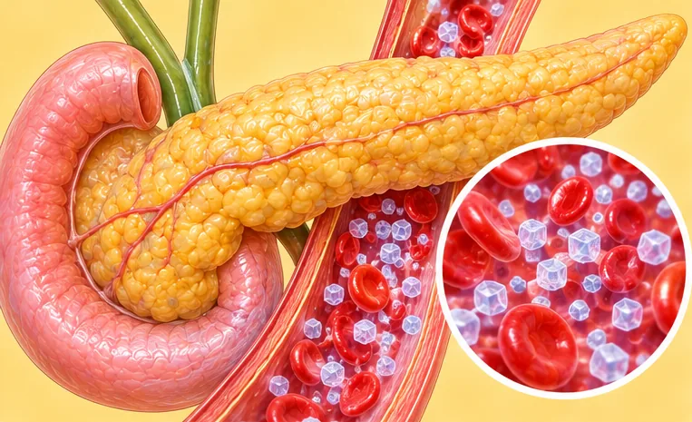
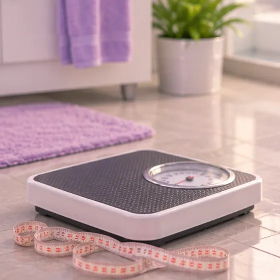

Rintangan insulin
Sel badan kurang bertindak balas kepada insulin, jadi gula darah lebih sukar dikawal
Apa itu
Insulin membantu gula bergerak dari darah ke dalam sel badan. Dengan rintangan insulin, sel kurang bertindak balas, jadi badan menghasilkan lebih banyak insulin. Lama-kelamaan ini boleh menyebabkan gula darah tinggi.
- Pankreas dan sel badan
- Orang dewasa, sering berat perut
- Letih, cepat lapar semula
- Jumpa doktor
- Doktor keluarga; pakar hormon (endokrinologi) jika perlu
- Biasa pada
- Orang dewasa dengan lemak perut, PCOS atau sejarah keluarga diabetes
- Berjangkit
- Tidak
- Perjalanan
- Selalunya jangka panjang; tabiat sihat dan pemeriksaan berkala sangat membantu
Tanda biasa
Selalunya tiada tanda pada awalnyaAsimptomatik Letih sepanjang masaKeletihan Berat badan mudah naikPertambahan berat badan Haid tidak teraturHaid tidak teratur
Tanda-tanda lain
- Tompok kulit lebih gelap dan lembut seperti baldu di leher atau ketiak
Mengapa ia berlaku

Berat badan berlebihanBerat badan berlebihan Diwarisi dalam keluargaKecenderungan genetik Kesan sampingan sesetengah ubatKesan buruk ubat
Punca lain
- Kurang bersenam dan banyak makanan manis atau halus
- Sindrom ovari polisistik (PCOS), kurang tidur atau usia meningkat
Jumpa doktor dahulu jika
- Sangat dahaga, banyak kencing atau berat badan turun tanpa sebab
- Muntah, sakit perut, pernafasan laju atau sangat mengantuk: ke hospital segera
- Sakit dada atau tanda strok (muka senget, lengan lemah, sukar bercakap): hubungi 999
- Penglihatan kabur atau luka lambat sembuh
Jika mana-mana berkenaan, sila jumpa doktor sebelum sesi.
Halaman ini ialah maklumat am. Sila terus mengambil ubat biasa anda dan terus berjumpa doktor.
Teruskan mengambil ubat biasa anda dan terus berjumpa doktor. Sesi kami ialah sokongan lembut dan tidak menggantikan rawatan perubatan.
Menjaga diri
Kekal aktif setiap hariAktiviti fizikal berkala Kekalkan berat badan sihatPengurusan berat badan Tidur yang cukupTabiat tidur yang baik 
Teruskan ujian berkalaPemantauan
Lebih banyak cara menjaga diri
- Kurangkan minuman manis dan makanan manis; makan lebih banyak sayur, kekacang dan bijirin penuh
Beritahu ahli terapi anda
- Diabetes atau deria kulit berkurang
- Kehamilan
- Penyakit jantung
- Tekanan darah tinggi
Ahli terapi anda akan menyemaknya bersama anda sebelum bermula.
Soalan dan jawapan
Apakah Rintangan insulin?
Sel badan kurang bertindak balas kepada insulin, jadi gula darah lebih sukar dikawal. Insulin membantu gula bergerak dari darah ke dalam sel badan. Dengan rintangan insulin, sel kurang bertindak balas, jadi badan menghasilkan lebih banyak insulin. Lama-kelamaan ini boleh menyebabkan gula darah tinggi.
Apakah tanda biasa Rintangan insulin?
Selalunya tiada tanda pada awalnya · Letih sepanjang masa · Berat badan mudah naik · Haid tidak teratur
Mengapa Rintangan insulin berlaku?
Berat badan berlebihan · Diwarisi dalam keluarga · Kesan sampingan sesetengah ubat
Bagaimana menjaga diri dengan Rintangan insulin?
Kekal aktif setiap hari · Kekalkan berat badan sihat · Tidur yang cukup · Teruskan ujian berkala
Bolehkah sesi AI Body Master membantu Rintangan insulin?
Sesi ialah sokongan meridian tanpa jarum yang lembut untuk kesejahteraan anda. Ia tidak merawat atau menyembuhkan Rintangan insulin dan tidak menggantikan ubat atau doktor anda. Beritahu ahli terapi anda sebelum sesi bermula.
Keadaan berkaitan
Rujukan: General information based on public health sources such as Mayo Clinic, NHS, Cleveland Clinic and NCBI StatPearls.
Halaman dikemas kini: 2026-11-04